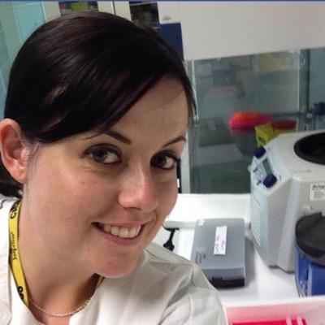
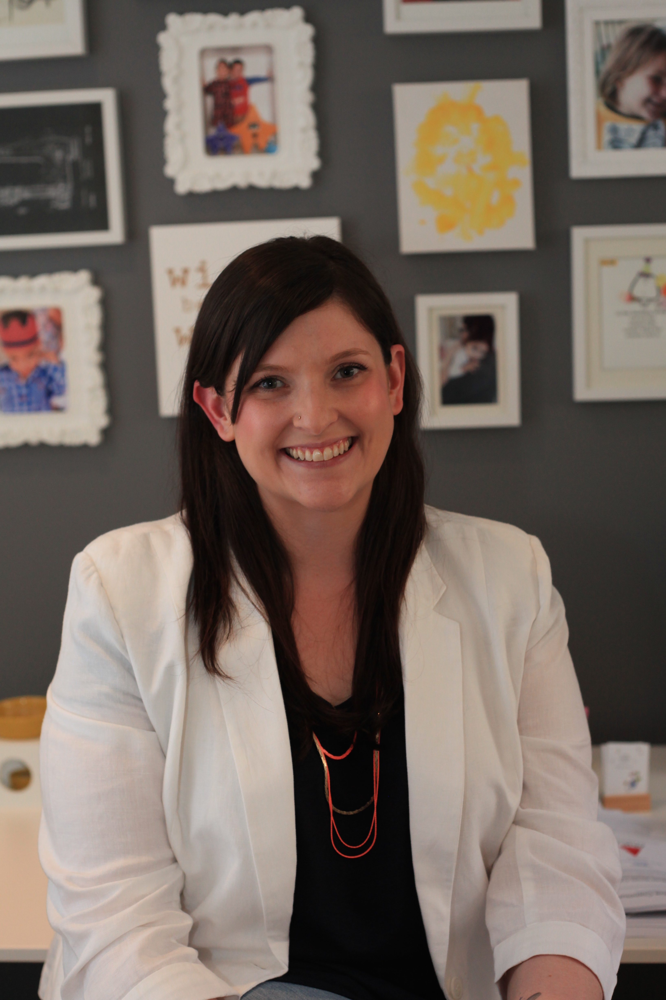

Workshops
Timetable
Social Events
Activities
Speakers
Register
Venue
Eduroam
Sponsors
Contact
| Workshops | Timetable | |
| Social Events | Activities | |
| Speakers | Register | |
| Venue | Eduroam | |
| Sponsors | Contact |
Speakers
This year will include talks from a wide selection of the community
Wednesday Speakers

Sam Hames @scmHames Technical Lead at Kapiche (www.kapiche.com). Software development, text analytics, machine learning, medical imaging PhD candidate |

Mark Hooper @mark_a_hooper Mark is Education and Cultural Change Coordinator for the Office of Research Ethics and Integrity at QUT. His PhD was about the philosophy of David Hume. He designs face-to-face and online training courses, and promotes research integrity. He spends a lot of time thinking about how to explain complex concepts more clearly. |
Thursday Speakers
|
John Pearson Co-founder of genomiQa and Manager of the Genome Informatics group at QIMR Berghofer MRI with 25 years as bioinformatician. He has worked as part of NIH Blueprint for Neuroscience, 1000 Genomes Project, as well as co-lead Queensland and Australia Genomic Health Alliance. John's publications have been cited over 18,000 times. |
 Janette Edson @janetteedson Currently I’m the sequencing manager at QLD Brain Institute, as well as technical support for UQ Genomics. My background is in applying technology to genomics, especially new and emerging technologies, and I’ve work in everything from neuroscience to forensic genetics! As well as being passionate about technology and genomics, I also am working toward enabling more people to engage with science. I’m a firm believer that everyone is a scientist, we all have a curiousity about the world and I’d like to see more people reach their potential and learn about all the awesome things science has to offer. |
Friday Speakers
|
 Kate Davis @katiedavis Kate Davis is a Senior Research Fellow at the University of Southern Queensland’s Digital Life Lab. She is a social scientist who researches information experience, particularly in the context of social media. Kate also undertakes applied research in information studies. Find Kate online at katedavis.info or follow her on Twitter |
Nigel Ward @nigeynige Dr Nigel Ward has a history providing information technology advice to non-technical communities. In his role of eResearch Manager at QCIF, he focuses on cloud-based Software Services for Australian researchers through involvement in the EcoCloud, Biodiversity and Climate Change Virtual Laboratory, Characterisation Virtual Laboratory, Humanities & Social Science Virtual Laboratory and Galaxy Australia initiatives. Dr Ward has a background in applied IT research, software engineering, interoperability of distributed systems, web technologies, service and data standardisation. |
Workshops
|
|
| Introduction to Python, bash and Git for Researchers. | Introduction to R, bash and Git for Researchers. |
|
|
| A free, open source, power tool for working with messy data. | Three talks on data resources and excellent case studies. |
|
|
| Smart and effective method for undertaking literature reviews. | Library Carpentry is software and data skills training aimed at the needs and requirements of library professionals. |
|
|
| Using Atlas of Living Australia (ALA) and the Biodiversity and Climate Change Virtual Laboratory (BCCVL) to explore species data and ecological models to understand the relationships between species and their environment. | Interactive workshop in which we will explore issues surrounding management of research data, specifically for people working with ecological data. |
|
|
| Using a cloud based suite for Bioinformatics - learn how to create and execute a complete RNA-seq analysis pipeline. | Hands-on workshop around the process of creating a classifier to solve an image analysis problem using scikit-learn and the broader Python numerical ecosystem. |
|
Introduction to ImageJ/FIJI |
| Learn how to run your code on the HPC in a hands on tutorial. | Using ImageJ/FIJI, this hands-on workshop provides a foundation in image analysis as well as explaining the terminologies, filters and processes. |
|
|
| Navigate a path to publish, license and promote your work and yourself in a highly competitive global research network. | This panel session will address the theme of open access and equity. This session is a joint QUT/UQ/Griffith event and is free to attend. |
|
|
| Explore digital tools to visualize your data and practice methods to form your narrative in this hands on workshop. | Alveo is a virtual laboratory for speech and language based research. Learn how to add your own data or analyse data we already hold. |
|
|
| The workshop will give some practical advice on how to use LaTeX for creating your project reports, thesis, and much more! |
Schedule
Timetable
Wednesday 6th
Thursday 7th
Friday 8th
Venue
The event will be held at Southbank campus of Griffith University, Brisbane
Each participant will prepare a small poster detailing the tools they work with and the areas they would like to get started in.
Social Events
Wednesday 6th
Please come join us after class at 5.30 today to meet the community that brings Research Bazaar Brisbane together. Meet in the Ship Inn main area - All Welcome!
Thursday 7th
Meet up with the Meetups! Connect with our local meetup and community groups and build your networks (plus meet some excellent folks) 5:30 upstairs in the Ship Inn Function room.
Friday 8th
Knowledge for all are gathering in the Ship Inn downstairs for a discussion following their panel. Stop in around 4pm to say hi!
Book an Expert
Pick the brains of our selection of Experts on a range of specialties. You can book in 30 minutes to sit down with one of our fantastic volunteers around any of the following topics:
* Statistics * Research Data Storage (Nextcloud/QRIScloud) * Research Data Management * NeCTaR VMs * HPC 101 * Method development * Applications of next generation sequencing * Genomic bioinformatic analysis * Image and Text analytics * GIS analytics - Finding and manipulating data and webmapping * Automating GIS tasks in ArcGIS using Python * R * Machine Learning * Python * LinuxDiscounts - Ship Inn
Show your Resbaz lanyard to get 10% off drinks and 20% food at the Ship Inn next door.Games
We have three games going throughout Resbaz
Colouring in Competition
Everyone loves a good colouring in competition. Come pick up your name badge at the front desk, decorate it to your hearts content and show it off!
Research Riddles
You may have noticed that your name badge has a sticker. Find three other people with the same sticker, come get your riddle from the front desk and solve away!
Augment my Treasure Hunt
You may see some furry critters around the conference. 'Catch' them with your phone to find the secret letters, unscramble them and present your word to the front desk to be in the draw!